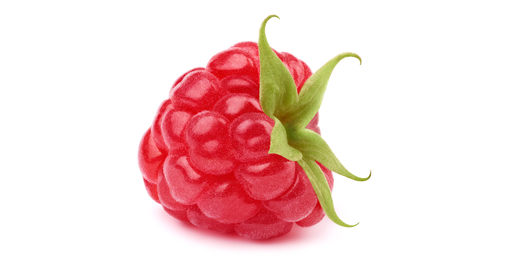

Les framboises sont des fruits délicats et savoureux, célèbres pour leur texture unique
et leur goût légèrement sucré et acidulé. Elles sont couramment consommées fraîches,
ajoutées à des desserts comme les mousses et les gâteaux, ou transformées en confitures
et en coulis. Riches en fibres, en vitamines C et en antioxydants, les framboises offrent
de nombreux bienfaits pour la santé, notamment en favorisant une bonne digestion et en
réduisant le risque de maladies chroniques.
